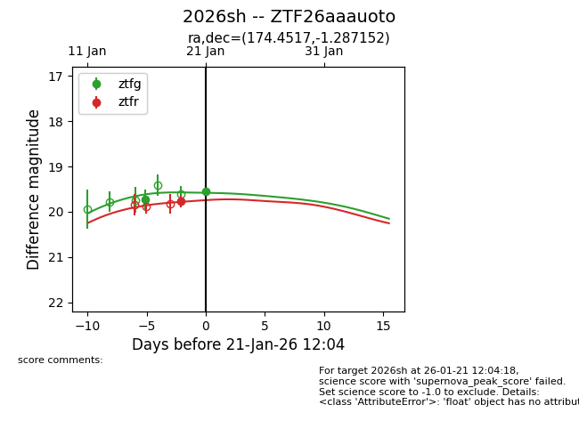
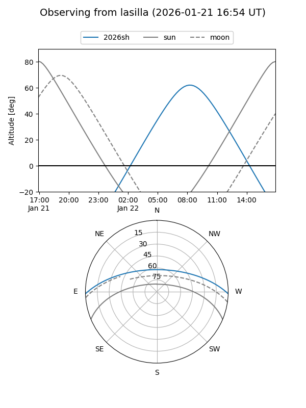
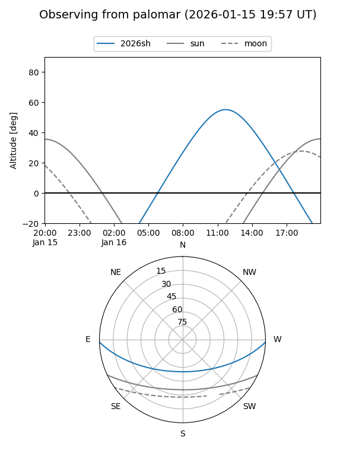
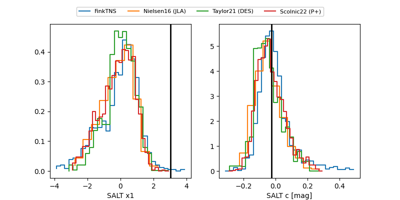

2026sh
Target 2026sh at 2026-01-22 10:31
Aliases and brokers:
FINK: link
Lasair: link
ALeRCE: link
TNS: link
YSE: link
alt names
ZTF26aaauoto (ztf,fink_ztf)
2026sh (tns,yse)
Coordinates:
equatorial (ra, dec) = 174.4517,-1.28715
equatorial (HMS+DMS) = 11:37:48.41,-01:17:13.75
galactic (l, b) = (268.0315,+56.51126)
Flags:
Photometry:
last ztfg=19.55, ztfr=19.76
3 ztfg, 1 ztfr detections
Lightcurve

Visibility


Additional plots
